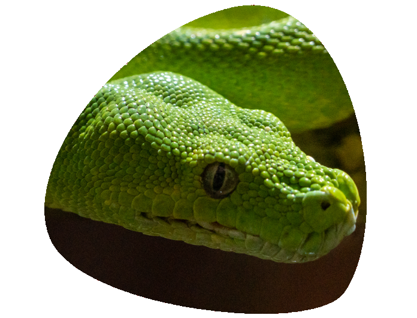

| Pitón arborícola verde | |
|---|---|
|  | DescripciónLa pitón verde tiene una longitud de alrededor de 1,8-2,4 metros, es de hábitos arborícolas, principal se encuentra en bosques, matorrales, arbustos y árboles. Tiene un color verde brillante (los jóvenes normalmente de un color amarillo canario brillante o rojos ladrillo, aunque este color es menos abundante) y una cola prensil adaptada a la sujeción en los árboles. La punta de la cola es de color negruzco y muy delgada, la cual es utilizada para atraer a sus presas, haciendo movimientos semejantes a los de un gusano.Habitualmente se la encuentra enrollada en las ramas, postura usada tanto para descansar como para cazar, al dejar la cabeza colgando con una gran cantidad de fosetas termorreceptoras alrededor de la boca.Tiene los dientes hacia dentro para tener mejor agarre sobre su presa y que esta no pueda escaparse. Tiene unos hoyos que perciben el calor para saber la posición de la presa en todo momento. Así es más fácil cazar a la presa. |
AlimentacionSe alimenta de pequeños mamíferos y reptiles y casi nunca de aves, tal como se pensaba hasta hace poco tiempo. |
HabitatOriginaria de Nueva Guinea, Indonesia y algunas partes de Australia tiene hábitos arborícolas, por lo que pasa la mayor parte de su vida en las ramas de los árboles. |
|
Video increible de la piton verde |
Caracteristicas
|